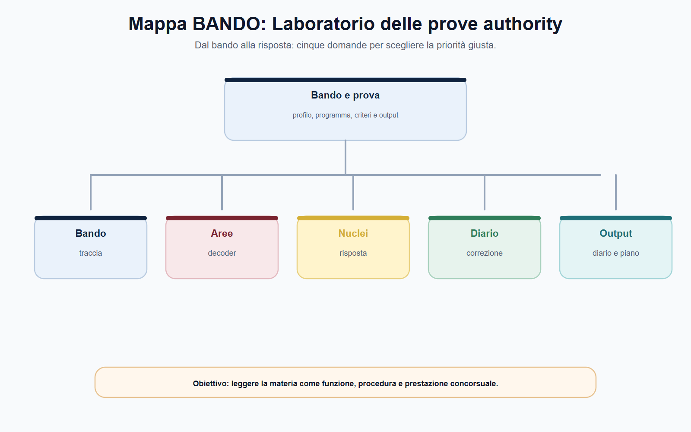
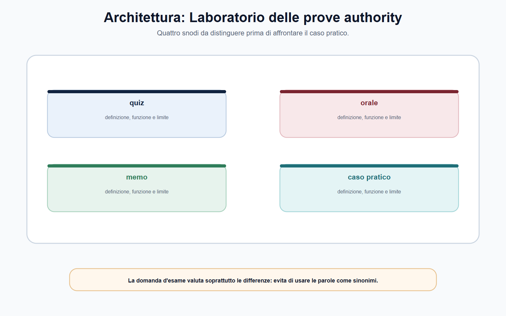
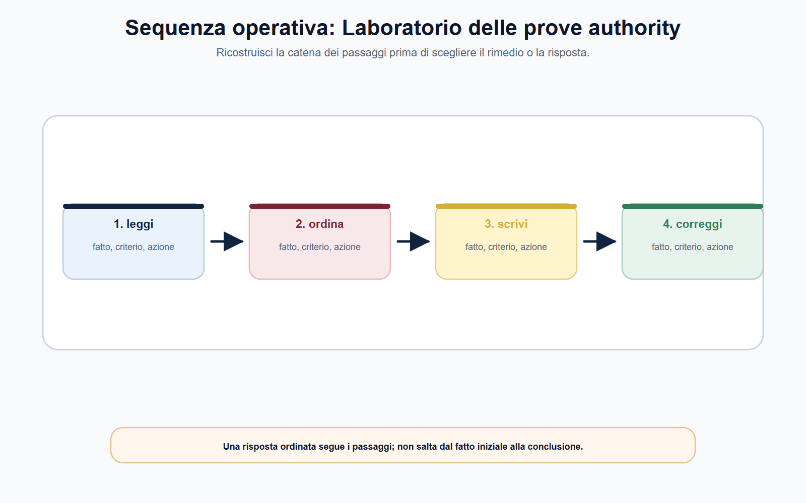
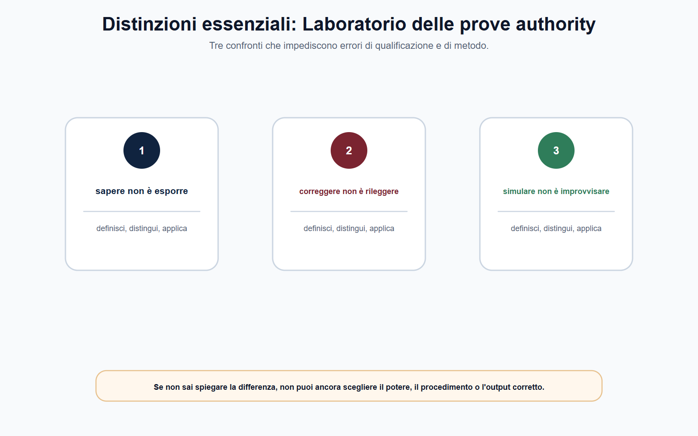

VOL-05 · Capitolo 15
M-FC05
Laboratorio delle prove authority
Il laboratorio non controlla se si ricorda la teoria. Trasforma le conoscenze in output: quesito sintetico, caso, nota economico-regolatoria, schema di decisione, memo in inglese e colloquio tecnico. Una conclusione prudente vale più di una sanzione nominata senza presupposti.
01 · Il problema in prova
Non cominciare dalla soluzione
La traccia chiede di definire, decidere, comparare, misurare o proporre un percorso? Quale interesse è protetto e quale catena di fonti, fatti, poteri, procedure e prove deve comparire nell'output?
Che cos'è
Un metodo ripetibile: qualificare il fatto, scegliere il formato, usare i percorsi G, E e P, costruire la risposta con fonte, fatto, potere, prova, garanzia e conclusione, poi autovalutare.
A che serve in prova
A non rispondere a una domanda immaginata. Se manca l'elemento per concludere, si dichiara e si spiega come verificarlo. Questa prudenza dimostra padronanza del procedimento, non indecisione.
Fonte → interesse → fatto → potere → procedimento → decisione → controllo.
Questa catena è lo strumento del volume. Indipendenza non significa assenza di controlli; cooperazione non significa gerarchia; vigilanza non coincide con sanzione; reclamo individuale e rischio sistemico possono comunicare senza diventare lo stesso procedimento.
02 · BANDO
Cinque decisioni sul laboratorio
Il bando target decide sempre forma, tempi, fonti e livello di approfondimento. Questo capitolo non sostituisce istruzioni, griglie o prove ufficiali dell'ente.
| Che cosa fai | Se la salti | |
|---|---|---|
| B — Bando | Leggi forma della prova, ente, profilo, tempo e fonti richieste. | Alleni un output che il bando non chiede. |
| A — Aree | Seleziona nucleo comune, verticale dell'ente e richiami puntuali. | Raddoppi il programma o ometti il settore. |
| N — Nuclei | Trasforma i capitoli in domande e casi G, E, P. | Reciti sigle senza tesi. |
| D — Diario | Registra un errore concreto dopo ogni prova, con azione di correzione. | Ripeti «devo studiare di più» senza bersaglio. |
| O — Output | Scrivi, esponi, confronta e riscrivi: elaborato, memo, orale di novanta secondi. | La prima stesura resta l'unica versione. |
03 · Decoder
Sei campi prima di scrivere
«Valuti l'intervento dell'Autorità» non chiede un commento generico. Impone di capire quale Autorità, quale intervento, quale materia e quale standard. Una traccia breve può essere complessa.

Verbo, settore, interesse protetto, fatti certi, fatti mancanti, output. Non inventare l'elemento che manca: dichiaralo e indica come lo verificheresti.
04 · Percorsi
G, E e P non sono recinti
Sono priorità diverse nella selezione delle fonti e nella forma dell'argomentazione. Il percorso G non può ignorare i fatti economici; E non può ignorare fonte e garanzie; P non deve raddoppiare il programma, ma tenere insieme i due piani.
| Baricentro | Rischio | |
|---|---|---|
| G | Fonte, competenza, procedimento, garanzie, rimedi. | Citare norme senza applicarle ai fatti. |
| E | Mercato, dati, incentivi, costi, qualità, impatti. | Indicatori senza nesso regolatorio. |
| P | Regola, mercato, dato e decisione insieme. | Accumulare nozioni senza tesi. |

05 · Struttura
Sei blocchi riconoscibili
Non devono comparire necessariamente come sei titoli, ma devono essere visibili. Una risposta eccellente non è quella che usa più sigle: è quella in cui ogni frase qualifica, prova, collega, limita o conclude.
1–2
Qualificazione del problema e del settore. Fonte e competenza, o riparto da verificare.
3–4
Fatti certi e prove da acquisire. Procedimento e garanzie: istruttoria, contraddittorio, consultazione, riservatezza.
5–6
Opzioni e proporzionalità. Conclusione operativa condizionata alle verifiche, con controllo o rimedio.
Elimina ciò che non aiuta a risolvere la traccia. In ogni elaborato scrivi almeno una frase sul perché la misura tutela un interesse e almeno una sul procedimento che ne rende controllabile l'esercizio.
06 · Percorso G
Tre simulazioni giuridiche
Le tracce sono originali e non riproducono prove ufficiali. Per ciascuna: tempo del bando, scrittura senza appunti, correzione con la griglia, versione orale di novanta secondi.
| Traccia in sintesi | Chiave | |
|---|---|---|
| G1 | Abbonamento «senza vincoli» con costi di recesso poco visibili. Molti consumatori segnalano. | Non affermare subito la pratica scorretta. Qualifica messaggio, visibilità, scarto, istruttoria. Distingui enforcement e tutela contrattuale del singolo. |
| G2 | Pagina istituzionale indicizza dati ulteriori rispetto alla graduatoria. Schema per il Garante. | Pubblicità, minimizzazione, ruoli, prove digitali. Reclamo e segnalazione non anticipano l'esito. Non «privacy prevale sempre». |
| G3 | Segnalazione interna su un contratto e poi valutazione negativa. Nota sulla ritorsione. | Contesto, canale, cronologia, motivazioni, comparazione. La tutela del segnalante non rende irrilevante la prova. |
07 · Percorso E
Dati, consultazione, tariffa
L'ipotesi di incentivo o standard deve seguire, non precedere, l'evidenza. La consultazione non è un referendum: raccoglie ragioni da valutare nella motivazione. Non si calcola una tariffa senza base dati.
| Chiave di correzione | |
|---|---|
| E1 qualità | Servizio, indicatore, periodo, dati disaggregati, metodologia, cause, effetti distributivi, monitoraggio. |
| E2 consultazione | Problema, obiettivi, stakeholder, opzioni, impatti su concorrenza, investimenti, utenti e operatori minori. |
| E3 tariffa | Separazione contabile, cost driver, perimetro, verificabilità. Evitare trasferimenti impropri di costo. |

08 · Percorso P
Piattaforma, intermediario, assicurazione, memo UE
Il fatto digitale non elimina il bisogno di una competenza specifica. La perdita o il disagio non provano automaticamente violazione o fragilità prudenziale. Il reclamo individuale non decide la solvibilità.
| Traccia in sintesi | Chiave | |
|---|---|---|
| P1 | Piattaforma modifica l'accesso e rende meno visibili alcune offerte. | Separa comunicazioni, utente, concorrenza, DSA/DMA, riparto. Non basta nominare AGCOM o AGCM. |
| P2 | Banca propone un prodotto complesso; notizie sulla redditività. | Condotta, prodotto, stabilità, mercato, rimedi. Niente riparto per slogan. |
| P3 | Reclami seriali su una garanzia e crescita rapida dei premi. | Due piani: condotta della garanzia e profilo prudenziale. L'autorità non è il giudice di ogni sinistro. |
| P4 | Memo in inglese, massimo 140 parole, su cooperazione UE prima di una misura transfrontaliera. | Interesse, base giuridica, scambio, enforcement coerente, diritti, evidenza. Cooperazione non rimuove la decisione nazionale motivata. |
09 · Rubrica
Dieci punti, non un premio
Assegna un punto a ogni voce per scegliere il prossimo ripasso. Una risposta sotto 6/10 non richiede di riscrivere l'intero capitolo: individua il primo anello mancante della catena.
| Criterio | Domanda di controllo |
|---|---|
| 1–2 Domanda e settore | Ho risposto al verbo? Ho individuato attività, mercato o interesse protetto? |
| 3–4 Fonte e competenza | Ho richiamato la fonte o dichiarato la verifica? Ho evitato l'intuizione sull'autorità? |
| 5–6 Fatti e prova | Ho separato certi, allegati e da accertare? Ho indicato dati, atti, log? |
| 7–8 Garanzie e proporzionalità | Contraddittorio, riservatezza, consultazione? Misura collegata a rischio e alternative? |
| 9–10 Conclusione e lingua | Esito operativo, non automatico? Testo leggibile, senza sigle non spiegate? |
10 · Tempo e diario
Quando smettere di raccogliere idee
Il tempo non si gestisce scrivendo più velocemente. Si gestisce decidendo quando ordinare la risposta. In una prova breve: decodifica e scaletta, redazione, verifica di competenza, fonte e conclusione. Adatta le percentuali al tempo del bando.
| Errore osservato | Correzione immediata | Ripasso |
|---|---|---|
| Confusione fra autorità | Rifai la mappa interesse–potere–ente. | Capitoli 1, 8–14 pertinenti. |
| Conclusione automatica | Aggiungi «verifiche necessarie». | Capitoli 5 e 6. |
| Dati senza metodo | Fonte, periodo, unità, limite del dato. | Capitolo 7. |
| Procedimento assente | Inserisci istruttoria e garanzie. | Capitoli 4 e 5. |
| Testo dispersivo | Riduci ai sei blocchi. | Questo laboratorio. |
Una sola frase precisa, non «devo studiare di più». Esempio: «ho attribuito la tutela dell'investitore alla vigilanza prudenziale senza qualificare il prodotto». Accanto, l'azione: pagina, fonte, mini-caso o orale da registrare.
11 · Piano
Trenta, sessanta, novanta giorni
Il piano è una traccia modulabile, non una promessa di preparazione universale. Il registro degli aggiornamenti contiene soltanto ciò che incide sulla prova: bando, allegati, programma, forma dell'esame, fonti settoriali, atti dell'ente e scadenze. Ogni riga: data, fonte primaria, capitolo, azione.
| Priorità | Output minimo | |
|---|---|---|
| 30 | Mappa enti, fonti, nucleo comune; quattro simulazioni. | Un G, un E, due P e diario. |
| 60 | Verticale dell'ente target e altre quattro simulazioni. | Due orali, un memo, revisione del Decoder. |
| 90 | Simulazioni complete, prova a tempo, correzione comparata. | Dieci tracce, registro, piano degli ultimi sette giorni. |

12 · Caso conclusivo
Memo intersettoriale sulla piattaforma
Un'impresa gestisce una piattaforma di comparazione di offerte energetiche. Alcuni dati indicano che le offerte con maggiore remunerazione per la piattaforma sono in evidenza; un'associazione lamenta informazioni insufficienti. L'impresa opera in più Stati membri. La risposta iniziale non deve scegliere una sola autorità.
| Passaggio | Ragionamento |
|---|---|
| Qualificazione | Attività, servizio, destinatari, criteri di visibilità, fonti. Tutela utente, energia, comunicazioni, concorrenza, cooperazione UE: tutti possibili, nessuno automatico. |
| Dati | Condizioni, interfaccia, remunerazioni, log, reclami, quote di traffico, mercato rilevante da verificare. |
| Riparto | Competenze e cooperazioni senza sommarle. Se manca un fatto, si dichiara la verifica. |
| Chiusura | Non «tutte le Autorità devono sanzionare»: istruttoria coordinata, con oggetto, prove, garanzie e limiti di ciascun intervento. |
13 · Verifica
Due domande da saper spiegare
Come imposta una risposta su un caso che coinvolge più authority?
Parto dai fatti e dall'interesse, senza scegliere subito l'autorità. Distinguo i profili davvero presenti: concorrenza, utente, regolazione, prudenza, privacy, integrità. Per ciascuno collego potere, procedimento, prove e garanzie. Alla fine indico l'autorità, l'eventuale cooperazione e una conclusione proporzionata.
Se riconosco l'autorità, posso omettere fonte e istruttoria?
No. La competenza è solo un anello. Senza fonte, fatti, prove, garanzie e motivazione, la conclusione resta un'affermazione non verificabile. Elencare tutte le authority «che potrebbero avere un interesse» è l'errore speculare.
14 · Mini-esercizio
Venticinque minuti, trecentocinquanta parole
Scegli una delle dieci simulazioni. Scrivi. Poi usa la rubrica e completa la scheda. L'esercizio è concluso soltanto con la seconda versione: la prima misura il livello, la riscrittura costruisce la competenza.
| Campo | Nota personale |
|---|---|
| Percorso | G, E o P e motivo. |
| Punto più forte | Il passaggio argomentato con maggiore precisione. |
| Punto da correggere | Fonte, competenza, prova, garanzia, dato o conclusione. |
| Azione entro 48 ore | Riscrittura, ripasso, fonte primaria o simulazione gemella. |
| Errore nel Diario | Una frase concreta e riutilizzabile. |
15 · Prima di consegnare
Cinque domande, tre controlli
Che cosa è accaduto? Chi può intervenire? Con quale procedimento? Quale esito è possibile? Come si controlla l'effetto? Si distinguono prescrizione, rimedio, impegno, sanzione, ADR e controllo del giudice.
1. Lingua
Cancella «sempre», «solo», «automaticamente» se non sono dimostrati.
2. Potere
Ogni autorità associata a un potere previsto, non a una missione generica.
3. Domanda
La conclusione risponde alla traccia e indica un passo operativo.
Bandi, soglie, termini, moduli, elenchi di vigilati e assetti applicativi si controllano alla data della procedura. Le architetture concettuali restano il punto di partenza, ma non autorizzano a ignorare la fonte vigente.
16 · Da tenere ferme
Cinque regole, con il perché
1. Le prove authority valutano il ragionamento, non l'accumulo di sigle.
2. Ogni risposta parte dalla qualificazione e collega fonte, interesse, potere, procedimento, prova e conclusione.
3. G privilegia garanzie e competenza; E evidenze e impatti; P integra i due piani senza raddoppiare il programma.
4. Una simulazione è utile solo se viene corretta con criteri espliciti e riscritta.
5. Il bando target decide forma, tempi, fonti e profondità. Il volume orienta; non sostituisce il testo vigente.
Chiusura del volume
Dal volume al bando
Authority, mercati, dati, integrità. Decoder, simulazione, diario, fonte vigente. Il volume orienta. Il bando decide profondità, prove e priorità. Quando sai quale interesse è protetto e quale potere stai applicando, il Metodo BANDO funziona anche fuori da queste pagine.